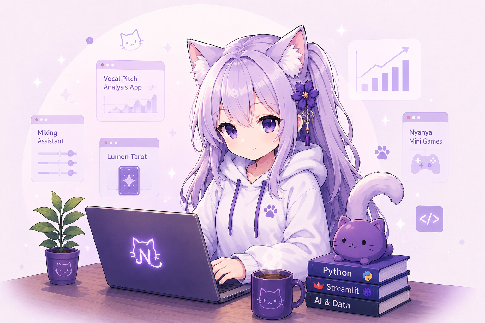

Practical by Design
Built around real personal workflows and repeatable tasks.
AI-assisted creative tools
Nyanya Project Lab is a collection of practical tools built with Python, Streamlit, and AI. Each project begins with a real personal workflow and improves through continuous iteration.

Small tools, real workflows
Nyanya Project Lab is a personal collection of small applications built from real workflows and everyday problems.
The projects focus on audio analysis, creative tools, productivity, and lightweight web experiences using Python, Streamlit, and simple web technologies.
Each project starts as a small MVP, improves through hands-on testing, and grows one feature at a time.
Built with Python, Streamlit, HTML, CSS, JavaScript, and curiosity.
Built around real personal workflows and repeatable tasks.
Projects grow through minimal changes, testing, and continuous improvement.
Designed to stay simple, useful, and easy to understand.
Projects
Compare vocal recordings with a reference track, review pitch stability, and track growth over time.
Analyze vocal recordings and suggest what to check first for balance, compression, de-essing, and EQ.
A simple tarot reading app with card history, mood-aware interpretation templates, and journaling features.
A lightweight launcher page for opening and organizing Nyanya apps without merging them into one large project.
Dev Logs
Recent development notes, project improvements, and small experiments from the lab.
The homepage now introduces the lab with clearer copy, stronger visual balance, and a softer creative feel.
Read Dev Log →Ongoing work is focused on making app status, notes, and iteration history easier to follow.
Read Dev Log →Recent checks focus on making audio feedback more practical for real vocal mixing decisions.
Read Dev Log →